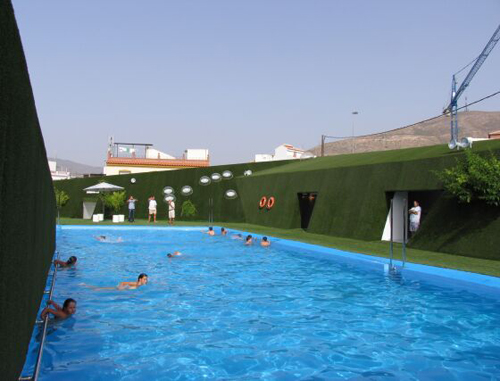

Piscina en un valle artificial

Autor: Jesús Granada
Año de publicación: 2016
Comentrio del autor:
Gran verano en granada, fue un gustazo
haber estado en ese lugar y poderos deleitar con algunas de las estampas que vi durante mis vacaciones.
Critica:
Sublime, seductora, compositivamente genial. Me
gustaria encontrar algo a lo que pudiera engancharme para hacerte una crítica feroz, pero me tengo que aguantar,
y no, no va aser posible.